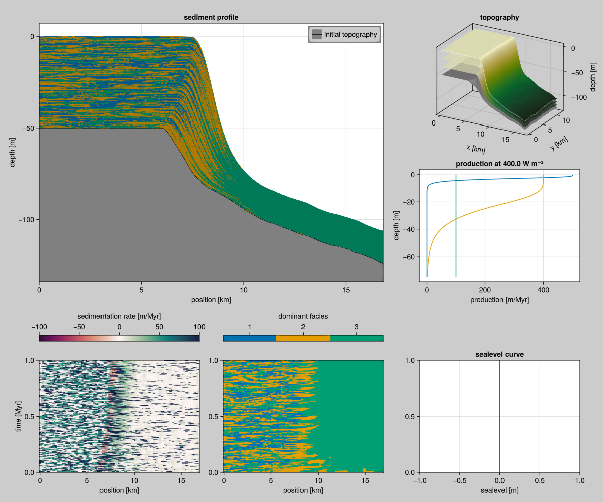

Generating Initial Topographies
Many carbonate platforms grow on a pre-exisiting abandoned carbonate platform. Therefore, it is reasonable to start the simulation with a platform-shaped initial topography.
The workflow to generate the initial topography is:
- Run a model with the same grid size as your target, the prerun.
- Export the final topography of the prerun to a CSV file.
- Read the CSV file for one or more production runs.
module Prerun
using CarboKitten
using CarboKitten.Export: read_volume
using Tables
using CSV: write as write_csv
const PATH = "data/output/initial-topography"
const TAG = "prerun"
const DATAFILE = joinpath(PATH, "initial-topography.csv")
<<initial-topography-prerun-param>>
<<initial-topography-export>>
end # module PrerunThe Prerun
In the first step, we define input parameters for our prerun. In this example run, constant sea-level has been used. One thing should be noticed is that the grids are 100 by 70, with scale of 170 m. Ideally, these values should be same as your runs later (otherwise, you could use an interpolation routine). Alternatively, you can use the WithoutCA model to run a 100 by 1 model, and use the resulting one-dimensional platform curve to seed a subsequent ALCAP run.
Note that, in the output parameter, we only specify topographic output with a write_interval=1000. After all, we're only interested in the topography here.
const FACIES = [
ALCAP.Facies(
maximum_growth_rate=500u"m/Myr",
extinction_coefficient=0.8u"m^-1",
saturation_intensity=60u"W/m^2",
diffusion_coefficient=50.0u"m/yr"),
ALCAP.Facies(
maximum_growth_rate=400u"m/Myr",
extinction_coefficient=0.1u"m^-1",
saturation_intensity=60u"W/m^2",
diffusion_coefficient=25.0u"m/yr"),
ALCAP.Facies(
maximum_growth_rate=100u"m/Myr",
extinction_coefficient=0.005u"m^-1",
saturation_intensity=60u"W/m^2",
diffusion_coefficient=12.5u"m/yr")
]
const INPUT = ALCAP.Input(
tag=TAG,
box=Box{Coast}(grid_size=(100, 70), phys_scale=170u"m"),
time=TimeProperties(
Δt=0.0001u"Myr",
steps=5000
),
output=Dict(
:topography => OutputSpec(write_interval=1000)
),
ca_interval=1,
initial_topography=(x, y) -> -x / 300.0,
sea_level= t -> 0.0u"m",
subsidence_rate=50.0u"m/Myr",
disintegration_rate=50.0u"m/Myr",
insolation=400.0u"W/m^2",
sediment_buffer_size=50,
depositional_resolution=0.5u"m",
facies=FACIES)When run, this model will write data to an HDF5 file, which can be a bit unwieldy to work with. This is why we'll compute the final topography and write it to a CSV file.
function prerun()
mkpath(PATH)
run_model(Model{ALCAP}, INPUT, "$(PATH)/$(TAG).h5")
end
function save_final_topography(prerun_filename)
header, data = read_volume(prerun_filename, :topography)
t = header.axes.t
h0 = header.initial_topography
subsidence = header.subsidence_rate * (t[end] - t[1])
delta_h = data.sediment_thickness[:, :, end]
h = h0 .+ delta_h .- subsidence
write_csv(DATAFILE, h |> in_units_of(u"m") |> Tables.table)
endThe Production Run
Next, we need to read the CSV file and use it to seed the main/production run.
function load_initial_topography()
(CSV.File(Prerun.DATAFILE) |> Tables.matrix) * u"m"
endWe can pass the resulting Matrix to initial_topography in the next input definition, and run the model as usual. For brevity, we'll reuse the facies definition from the prerun.
module ProductionRun
using CarboKitten
using CSV
using Tables
include("get_init_topo.jl")
const PATH = Prerun.PATH
<<load-initial-topography>>
function run()
input = ALCAP.Input(
tag = "mainrun",
time = time = TimeProperties(
Δt = 200u"yr",
steps = 5000
),
box = Prerun.INPUT.box,
facies = Prerun.INPUT.facies,
sea_level = t -> 0.0u"m",
initial_topography = load_initial_topography(),
output=Dict(
:topography => OutputSpec(write_interval=100),
:profile => OutputSpec(slice = (:, 35))
),
subsidence_rate = 50.0u"m/Myr",
insolation = 400.0u"W/m^2",
transport_solver = Val{:forward_euler},
sediment_buffer_size = 50,
depositional_resolution = 0.5u"m",
cementation_time = 50.0u"yr",
disintegration_rate = 100.0u"m/Myr")
run_model(Model{ALCAP}, input, joinpath(PATH, "mainrun.h5"))
end
end # module MainRun
Howto Use
To apply this method to your own models, you can copy the save_final_topography and load_initial_topography functions to your script. Make sure that, next to CarboKitten itself you have the Tables and CSV packages installed.
Workflow
#| creates: ["data/output/initial-topography/prerun.h5"]
#| requires:
#| - examples/initial_topography/prerun.jl
include("examples/initial_topography/prerun.jl")
Prerun.prerun()#| creates: ["data/output/initial-topography/initial-topography.csv"]
#| requires:
#| - examples/initial_topography/prerun.jl
#| - data/output/initial-topography/prerun.h5
include("examples/initial_topography/prerun.jl")
Prerun.save_final_topography("data/output/initial_topography/prerun.h5")#| creates: ["data/output/initial-topography/mainrun.h5"]
#| requires:
#| - examples/initial_topography/production_run.jl
#| - data/output/initial-topography/initial-topography.csv
include("examples/initial_topography/production_run.jl")
ProductionRun.run()#| requires: ["data/output/initial-topography/mainrun.h5"]
#| creates: ["docs/src/_fig/initial_topography_example.png"]
#| collect: figures
module Plot
using GLMakie
using CarboKitten.Visualization: summary_plot
function plot()
fig = summary_plot("data/output/initial-topography/mainrun.h5")
save("docs/src/_fig/initial_topography_example.png", fig)
end
end
Plot.plot()